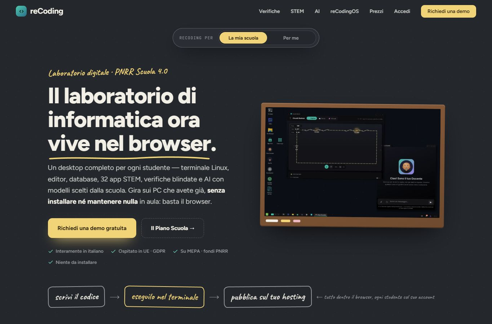

01ScuolaWeb app


INGRANDISCI ANTEPRIMAreCoding
Il laboratorio di informatica, dentro il browser.
Un ambiente di lavoro per studenti e docenti che porta il laboratorio di informatica direttamente nel browser. Ogni utente dispone di un desktop a finestre con archivio cloud, terminale e strumenti per scrivere, eseguire e organizzare il codice. La piattaforma affianca alla programmazione laboratori STEM interattivi, applicazioni didattiche e strumenti AI. I docenti possono usarla anche per le verifiche di laboratorio, mentre gli studenti ritrovano file e progetti accedendo al proprio spazio.
- Desktop e archivio cloud
- Strumenti STEM interattivi
- Verifiche di laboratorio e strumenti AI
Ultimo commit · 30 set 2026